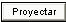
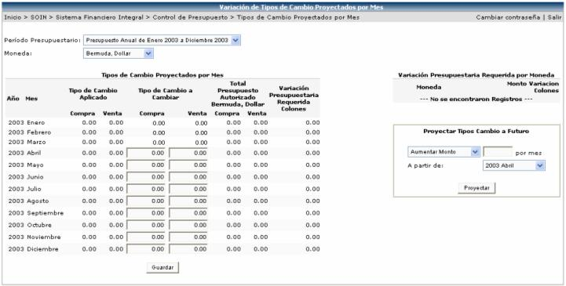

En esta opción del sistema el usuario podrá seleccionar el periodo presupuestario y la moneda con la que desea trabajar y el sistema le mostrará la información según las opciones de trabajo que se eligieron (periodo y moneda)
Los tipos de cambio se pueden proyectar a futuro, ya sea aumentando un monto o aumentando un porcentaje y seleccionando el mes a partir del cual se quiere que rija dicha proyección y luego presionado el botón

. También se puede realizar manualmente uno por uno de los meses digitando un tipo de cambio proyectado y luego presionar el botón
